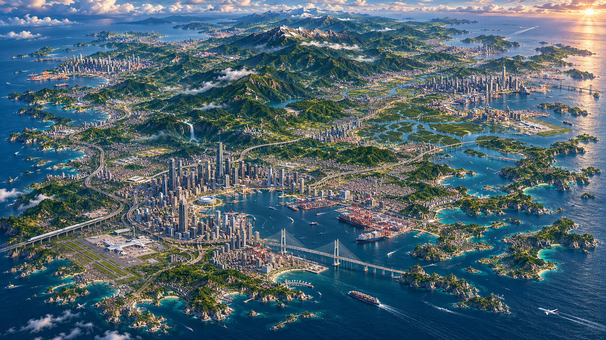
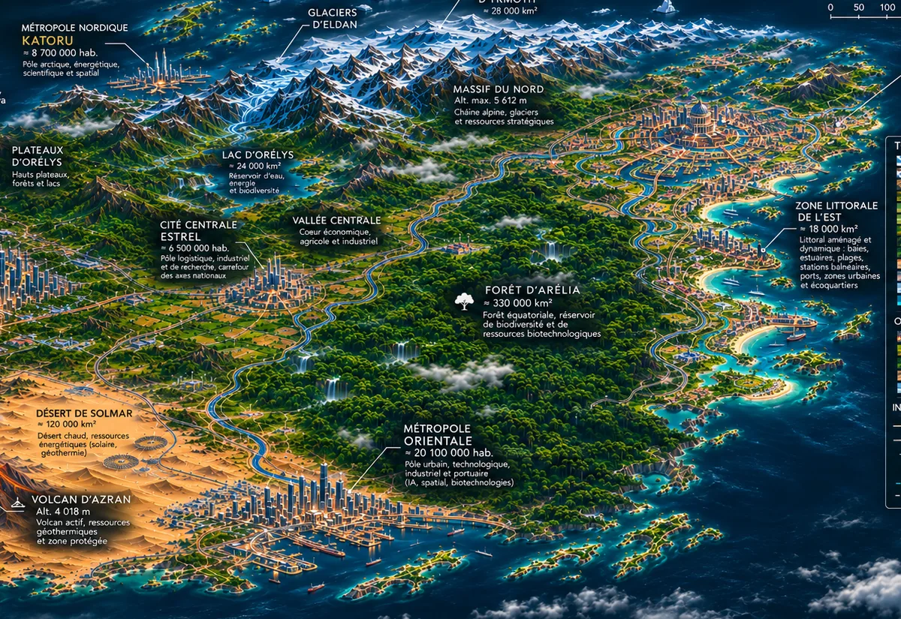

Hautes terres & glaciers
Chaînes alpines, lacs d’altitude, glaciers et étendues polaires.
Découvrir la région ↗
Des sommets enneigés du Nord aux cités du littoral, explorez Arélia : un empire insulaire de cent millions d’habitants, au patrimoine naturel et urbain exceptionnel.
Arélia se déploie sur un million de kilomètres carrés : des montagnes glaciaires, un réseau fluvial traversant les plaines, des métropoles ouvertes sur l’océan, un grand massif forestier et un désert volcanique. Le portail présente ce monde de l’intérieur ; l’encyclopédie rassemble les connaissances de l’univers.
Lire la présentation générale ↗
Des régions aux contrastes saisissants dessinent la géographie d’Arélia et façonnent ses villes.
Chaînes alpines, lacs d’altitude, glaciers et étendues polaires.
Découvrir la région ↗Fleuves, grands paysages de forêt humide et plaines agricoles.
Découvrir la région ↗Sables de Solmar, formations minérales et volcan d’Azran.
Découvrir la région ↗Une cité de canaux, de ponts et d’institutions, au centre-est de l’île.
Explorer Vésone ↗La porte maritime du grand fleuve central sur la côte occidentale.
Explorer Occidian ↗La ville du Sud, à la rencontre du désert et des grandes routes maritimes.
Explorer Orientale ↗La grande cité des mers froides et des paysages de haute montagne.
Explorer Katoru ↗